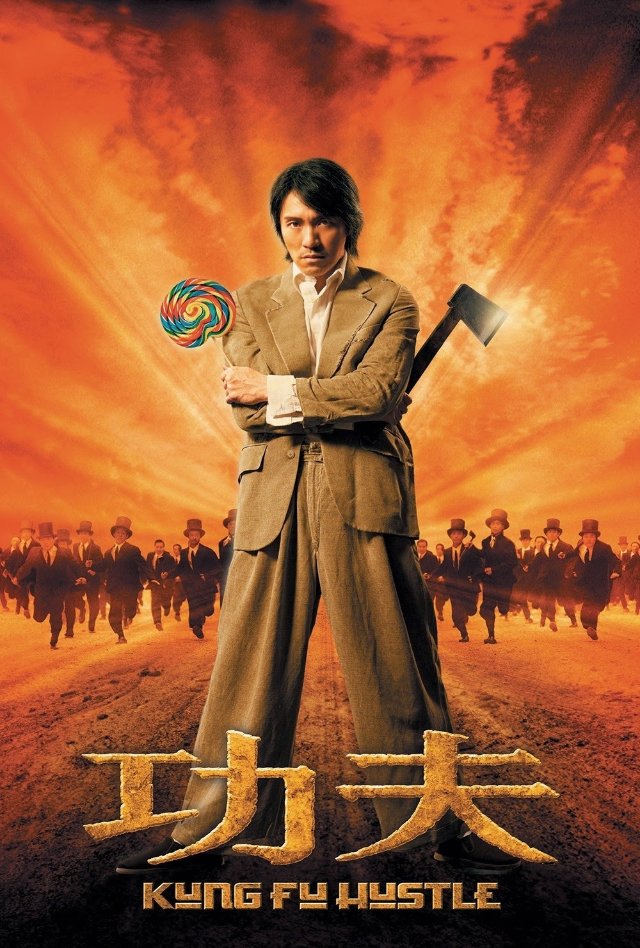
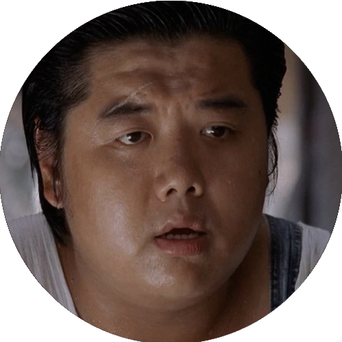
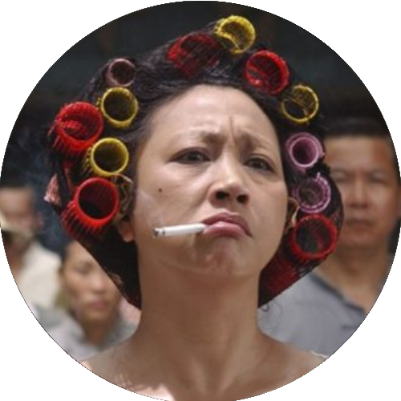
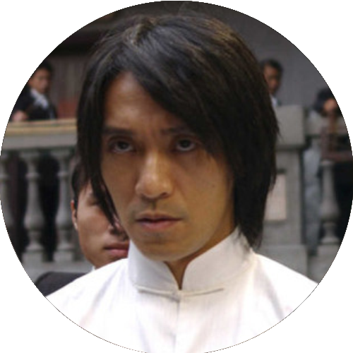
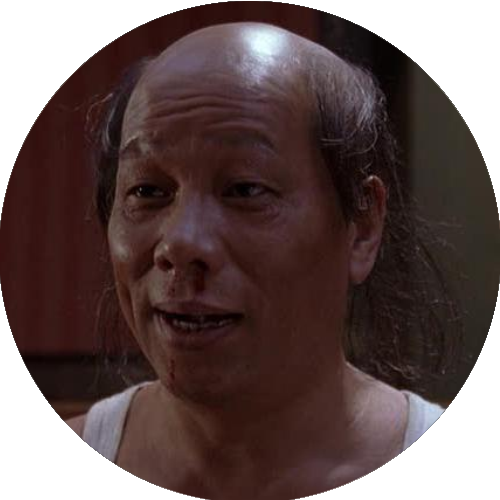
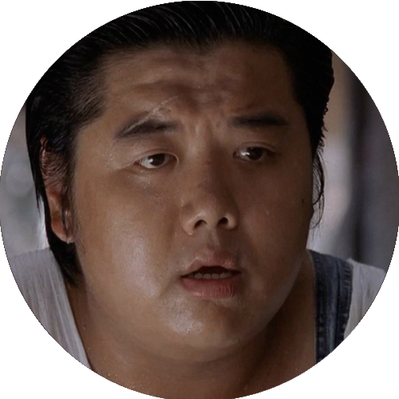
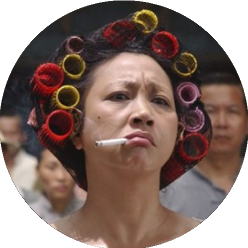
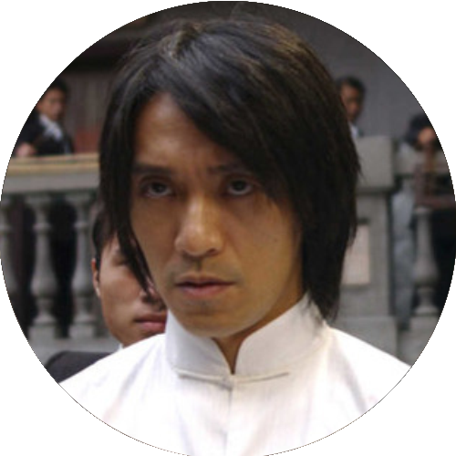
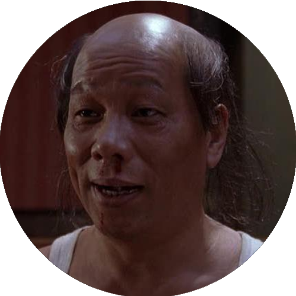

Kung-Fusão (2004)

Direção: Stephen Chow
Distribuição: Columbia Pictures
Lançamento:
22 de abril de 2005
17 de junho de 2005
ASSISTIR
Personagens
   
Direção: Stephen Chow
Distribuição: Columbia Pictures
Lançamento:
22 de abril de 2005
17 de junho de 2005
ASSISTIR
   